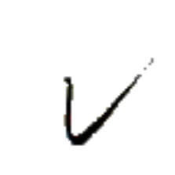
イー⤴
【反】【叛】
反言
イー⤴チェㇷ゚→
【反言】
[動詞]
返答する
[名詞]
返答
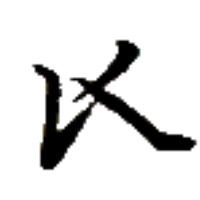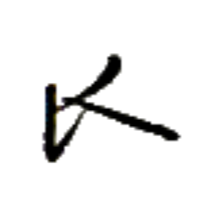
ムイ→
【魚】
[名詞]
魚
[名詞]
ムイ（人名）
魚水
ムイ→ヌアー⤴
【魚水】
[名詞]
魚醤
魚網
ムイ→トゥㇰ⤴
【魚網】
[名詞]
漁網
高魚
ズエゥー→ムイ→
【高魚】
[名詞]
ズエムイ（人名）
享魚
ゼゥㇷ゚·ムイ→
【享魚】
[動詞＋目的語]
魚を捕らえる
享魚人
ゼゥㇷ゚·ムイ→スㇰ⤴
【享魚人】
[名詞]
漁師
引享魚
ミー⤴ゼゥㇷ゚·ムイ→
【引享魚】
[動詞＋目的語]
魚を釣る
手享魚
ホㇷ゚→ゼゥㇷ゚·ムイ→
【手享魚】
[動詞＋目的語]
魚を捕らえる
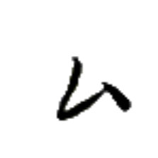
ティン→
【己】
[連体詞]
自分の
[名詞]
自分
磨己
ヤー→ティン→
【磨己】
[動詞]
自己研鑽する
[名詞]
自己研鑽
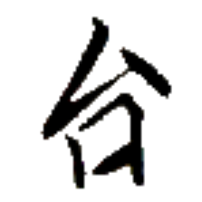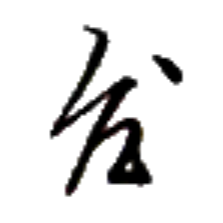
カー→
【此】
[名詞]
これ
[連体詞]
この
[繋詞]
〔直前に名詞、直後に述部［たいていは名詞か状態動詞］を取って〕～は～である
此処
カー→ホエゥ·
【此処】
[場所詞]
ここ
此類
カー→ズオウ⤴
【此類】
[連体詞]
このような
此日
カー→キアー→
【此日】
[時間詞]
今日、今
此星
カー→ペゥㇳ⤴
【此星】
[時間詞]
今年
此時
カー→カㇰ·
【此時】
[時間詞]
今
此故
カー→シㇳ⤴
【此故】
[文接続詞]
ゆえに
[文接続詞]
なぜかというと
直後に原因が来る場合と、直後に結果が来る場合の両方があるため注意。
此下
カー→ウㇳ⤴
【此下】
[名詞]
コールーシャム、コルシャン（人名）
此互
カー→ホアㇳ→
【此互】
[名詞]
あれこれ、諸々
周此日
セイ⤴カー→キアー→
【周此日】
[時間詞]
最近、近頃
周此日果銭上行
セイ⤴カー→キアー→トゥアー→ズー→ザウ⤴モㇰ→
【周此日果銭上行】
最近、果物の値段が上がっている。
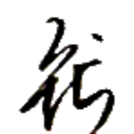
ペゥㇰ⤴
【牌】
[名詞]
パイグ（言語・民族名）
牌言
ペゥㇰ⤴チェㇷ゚→
【牌言】
[名詞]
パイグ語
牌族
ペゥㇰ⤴ニㇺ⤴
【牌族】
[名詞]
パイグ民族

 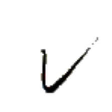
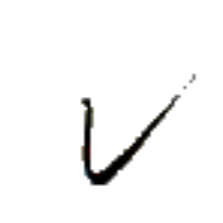 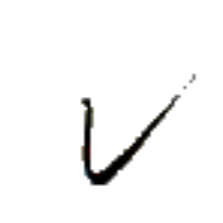
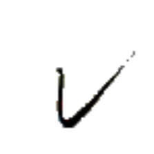
 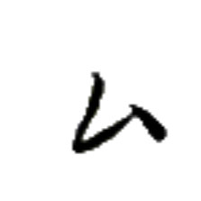
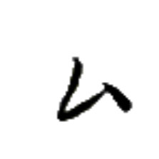
 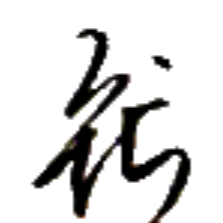
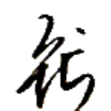